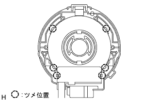

ステアリングセンサ 取り外し |
| 1. 取り扱い·作業上の注意 |
参照)| 2. バッテリマイナスターミナル切り離し |
| 3. フロントタイヤ直進状態確認 |
| 4. ホーン ボタンASSY取りはずし |
トルクスソケツトレンチ(T30)を使用して、トルクスボルト2本を空転するまでゆるめる。
 |
マイナス薄刃ドライバーを使用して、トルクスボルト2本を引き出す。
 |
ホーンボタンASSYを手前に引き出す。
マイナス薄刃ドライバーを使用してロック解除し、エアバツグ用コネクタを切り離してホーンボタンASSYを取りはずす。
| 5. ステアリング ホイールASSY取りはずし |
 |
ナットをはずし、ステアリングホイールASSYおよびステアリングメインシヤフトASSYに合わせマークを付ける。
SSTを使用して、ステアリングホイールASSYをステアリングコラムASSYから取りはずす。
| 6. ステアリングコラム カバー取りはずし |
 |
スクリュー3本をはずし、ステアリングコラムカバーを取りはずす。
| 7. スパイラル ケーブルSUB-ASSY取りはずし |
スパイラルケーブルからエアバツグ用コネクタおよびコネクタを切り離す。
 |
ツメのかん合3箇所をはずし、ターンシグナルスイツチ部からスパイラルケーブルを取りはずす。
| 8. ステアリングセンサ取りはずし |
|  |
ツメのかん合6箇所をはずし、ステアリングセンサをスパイラルケーブルから取りはずす。